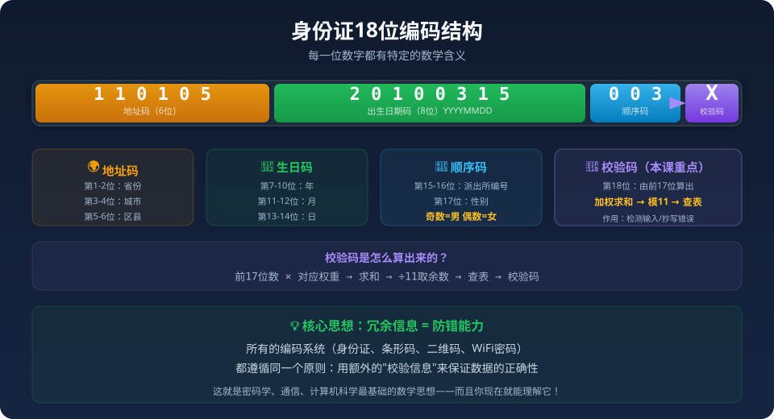

Gallery
v0.1.0 · skill v7.14.0
11010520100315003X —— 这18位数字不是随便写的。每一位都有含义，最后一位更是由前17位通过精密的数学规则算出来的。来，一起揭开编码的数学原理！

填写资料时，你把身份证第15位写错了——把"3"写成了"8"。
工作人员能发现吗？
能！因为最后一位校验码不匹配。
And 身份证有18位。But 第18位由前17位算出。Therefore 写错数字→校验码对不上→错误被发现！
先选一个你关心的问题。后面的例子、提示和 AI 学伴都会围绕这个问题来帮你推进。
选择或输入后，本课会围绕你的问题展开。
3道题，看看你对编码和余数了解多少。不会也没关系，学完这节课你就都明白了！
我们先不急着算校验码，先来看看身份证的18位数字分别代表什么。
11 = 北京市
01 = 市辖区
05 = 朝阳区
编码规则：省→市→区，逐层缩小
2010 = 年
03 = 月
15 = 日
8位数字 = 一个完整的日期
003 = 当天出生第3人
第17位看性别：奇数→男，偶数→女
由前17位算出来的
不是随便填的！× ≠ 乘号，代表数字10
同学们，你们已经学过：一个数的各位数字之和能被9整除，这个数就能被9整除。
这就是"校验"的思想：
用额外计算来判断原始计算是否正确
例：乘法用除法验算
在数据末尾多加一位数字，这个数字由前面的数据按规则算出
如果数据被改动了，校验位就对不上了！
现在让我们一步步目睹校验码是怎么算出来的。我们用一个简化的10位学号示例（原理与18位身份证完全一样）：
演示学号：2 0 2 4 1 5 0 3 0 1
计算它的校验码（简化版：各位数字之和 ÷ 9 的余数）
上面我们用了简化版的"数字之和÷9"来理解原理。真正的身份证用的是一种更精密的算法——模11加权校验。
真正的身份证校验码计算分为三步：
前17位数字分别乘以固定的权重：
权重 = 7,9,10,5,8,4,2,1,6,3,7,9,10,5,8,4,2
每一位：数字 × 权重 → 全部加起来
总和 ÷ 11 → 取余数（0~10）
为什么是11？因为11是质数，检错能力最强
余数 0→1, 1→0, 2→X, 3→9, 4→8...
X = 罗马数字10，因为校验码只能占1位！
现在轮到你动手了！下面这串数字是一个10位学号+1位校验码（简化版规则：前10位之和 ÷ 9 的余数 = 校验码）。
点击任意一位数字来修改它，看看校验码能不能发现你改错了！
学完了，再来测一次！和前测对比，看看进步了多少。
1. 身份证第7-14位代表什么信息？
2. 身份证最后一位校验码是随便写的吗？它有什么作用？
3. 学号 2+0+2+4+0+3+0+1 = 12，12÷9 余数是 3。校验码是多少？
1. 身份证第17位看性别，奇数=男。532末位2是偶数，猜性别？
2. 学号前10位=1020304050，数字之和÷9余几？校验码是几？
3. 为什么说校验码像"快递封条"？用自己的话解释。
1. 设计一个6位学号编码方案（入学年份2位+班级2位+序号2位），加1位校验码（各位之和÷7的余数）。写出完整7位学号。
2. 简化规则下原始之和=18，校验码=0。把某一位加9，校验码变吗？说明什么问题？
3. 身份证用"加权求和"而不用"简单求和"，有什么好处？
X 是罗马数字 10。因为校验码占1位，10没法用"10"两个字符表示，就用X代替。
校验码能告诉你"数据有问题"，但不能告诉你是哪一位错了。更高级的编码（如二维码）才有纠错能力。
权重 7,9,10,5,8,4,2,1,6,3,7,9,10,5,8,4,2 不是乱来的——它们经过了精心设计，确保能检测到最常见的错误模式。
模运算：加权求和→除11取余→查表。核心是"用一个数学规则把17位压缩成1位"。
防伪手段。如果不知道校验算法，就算改了一个数字也无法让它通过验证。
发送方附加校验码→接收方验证。互联网每个数据包都有校验——你每天都在用它！
好的编码要平衡：信息密度、唯一性、检错能力。身份证18位是精妙的设计。
填表时写错身份证号→系统提示"号码错误"→这就是校验码在保护你！
学会用"校验"思维看待数据——这在密码学、计算机科学中会再次出现。
本节点的前置、后续和同域知识。